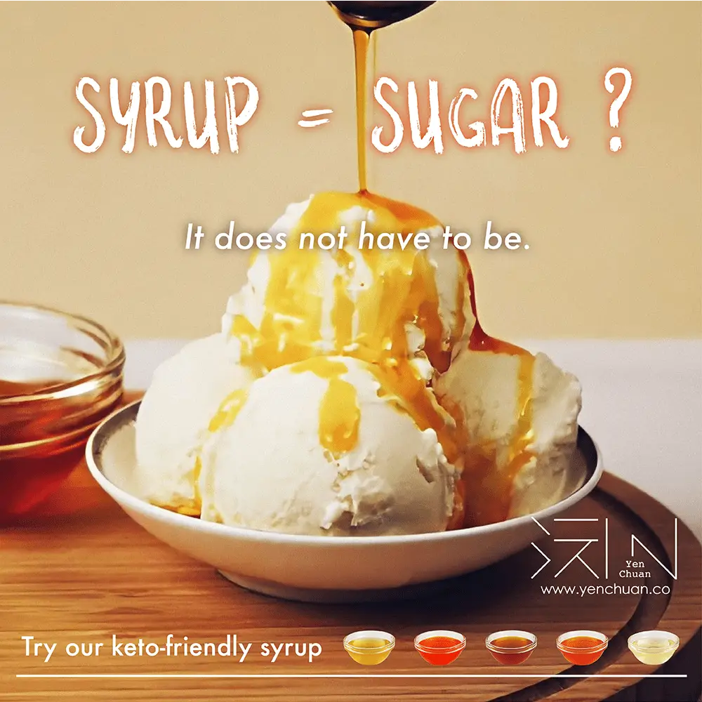
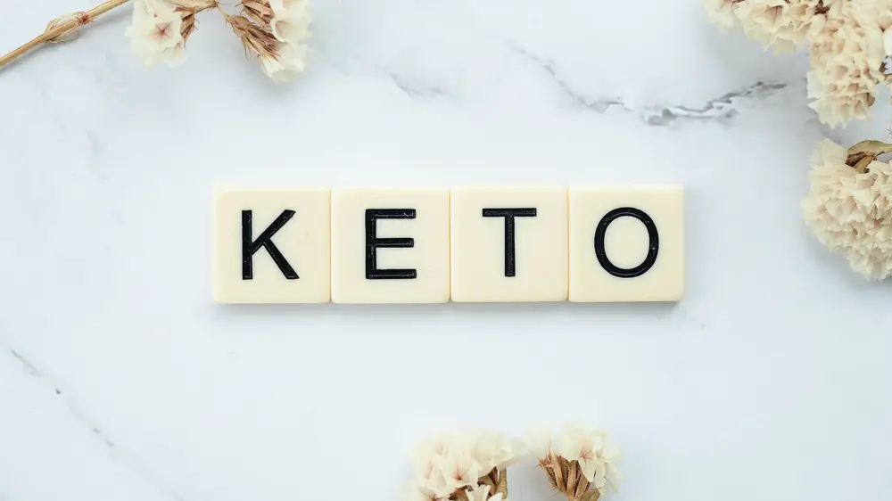

文章 / 飲品配方與資訊
Enjoy guilt-free bubble tea with keto-friendly syrups!
這篇是英文原文，尚未完成繁體中文翻譯。中文選單與相關商品連結不會切回英文介面。

查看英文原文（尚未翻譯）
It’s that time of the year! Late October through New Year is a time of celebrations, family get-togethers and gift-giving: a 3-month food-fest! While it’s a fun, joyful time for all, it’s easy to go overboard…with the results apparent the moment you step on a bathroom scale.
Let’s do the math: a few days of overindulging per holiday can really add up, resulting to at least 15 days of feasting and a couple extra pounds under your belt. (Lingering Halloween candy and the November/December string of holiday parties make that a distinct possibility.)
What can you do? Our keto-friendly syrups are here to the rescue!

What Is Keto?
The Ketogenic (or Keto diet) is a low-carb diet similar to the Atkin’s diet. The idea is to get more calories from protein and fat, and less from carbohydrates. It lowers blood sugar and insulin levels, and shifts the body’s metabolism away from carbs towards fat and ketones.
How Does It work?
When you eat less than 50 grams of carbs a day, your body eventually runs out of readily-available blood sugar. Your body starts to break down protein and fat for energy, and you lose weight as a result. This is called ketosis.
Syrups certainly make everything taste better. However, as most syrups in the market are chock-full of sugars and high-fructose corn syrup, they are anything but keto-friendly.
Don’t fret! Being on the keto diet doesn’t mean you have to give up all of your favorite foods. All you need is the right ingredients!
Looking for something lighter but still packed with flavor? Why not give our keto-friendly syrups a try?
Why keto-friendly syrups?
Our range of low-carb, keto-friendly syrups are just as good as regular syrups, and doesn’t have that artificial taste you get when using most sugar-free syrups. With how authentic the flavour is, it’s hard to believe that it’s a sugar-free syrup with 0 CARBS!
Drizzle our syrups over your favourite breakfast, or try a hand in making low-carb desserts – the possibilities are endless!

Current flavours available include mango, orange, vanilla, strawberry, and peach syrup.
Check out our keto-friendly syrup series here! 👇